Core-Based Trees (CBT)
CBT Definition
The goal of multicast routing is still the same: We have a packet whose destination is a group, and the routers need to work together to forward this packet to all members of the group.
However, we will now try a different approach, completely different from DVMRP.
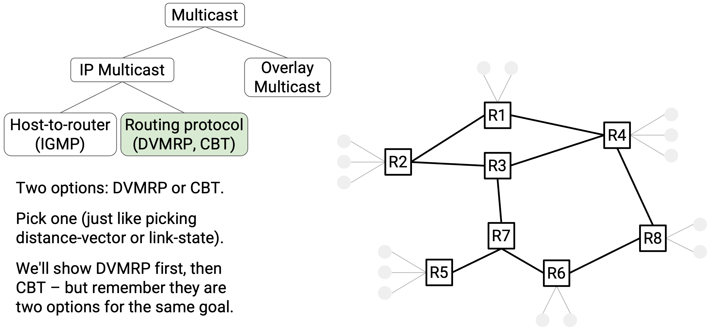
In the Core-Based Tree (CBT) approach, each destination group has its own tree. The CBT for a destination group is simply a tree that touches every member of that group.
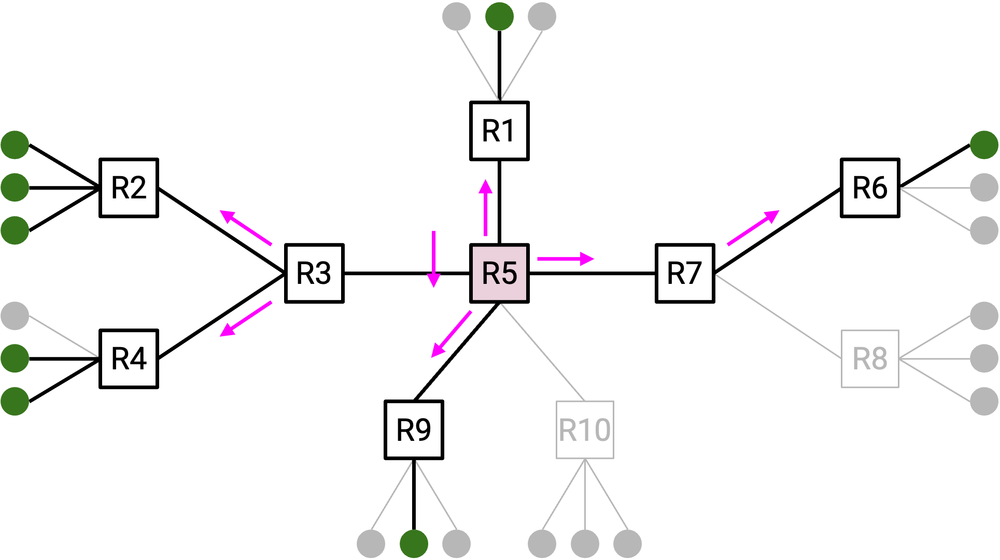
It can be confusing to think about CBT trees and DVMRP trees at the same time. For now, you can think of them as totally different trees with nothing in common.
Building CBTs
To build a core-based tree, the tree needs a root, which we’ll call the core. The core is some arbitrary router in the network, chosen ahead of time.
Now, we’ll build a tree that touches every group member, with the core as the root.
If a member wants to join a group, the member unicasts a join message to the core. This packet travels through several routers to reach the core. All of these routers join the tree as well, so that the tree now has a path from the core to the new member.
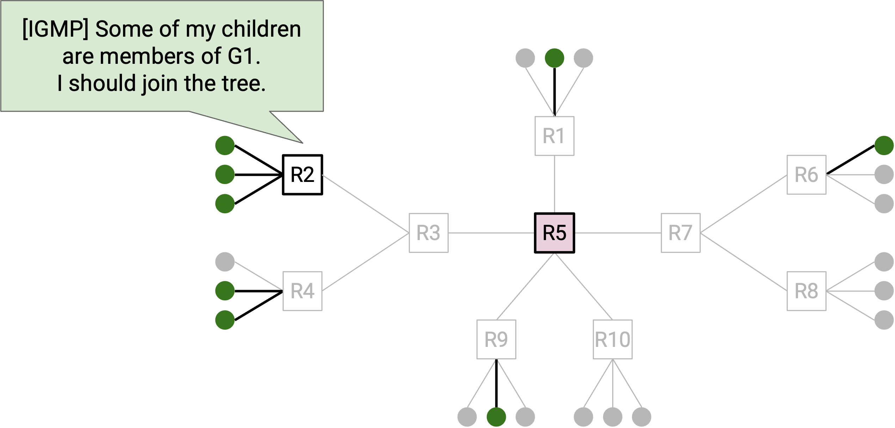
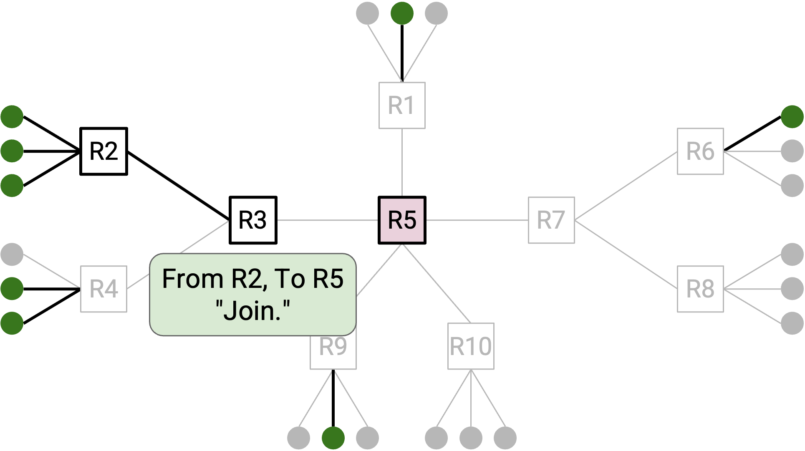
More formally, if you’re a router and you receive a join message for a specific group, you know that you are now part of this group’s tree. The join message’s incoming link is your child (link pointing away from the root). The join message’s outgoing link (next-hop to root) is your parent (link pointing toward the root). You can write down your parent and your children to remember where you are in the tree. There’s no global mastermind remembering the tree; each router on the tree is responsible for remembering its own parent and children.
If a member wants to leave a group, the member can unicast a quit message to its direct parent on the tree. If all of your children on the tree have sent a quit message, that means that you can also leave the tree, so you can send a quit message to your direct parent. Quit messages are sent to your direct parent, and are not forwarded any further than that.
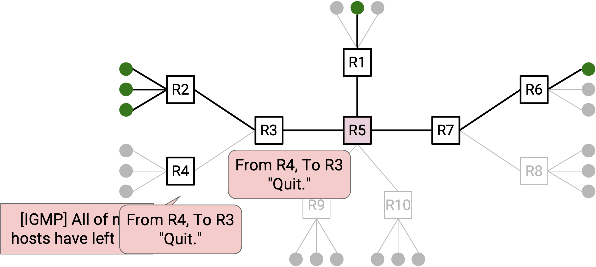
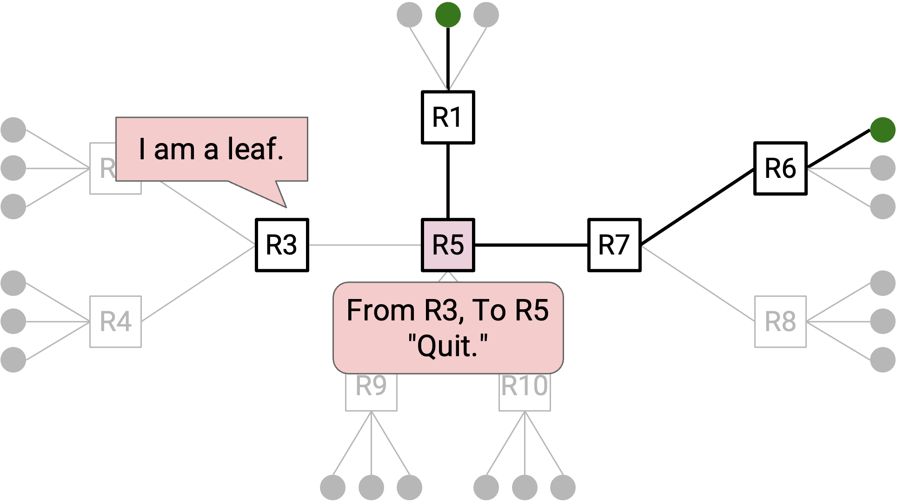
Remember that we are building one tree per group. This means that routers must remember their parent and children for each tree that they belong to. Also, join and leave messages must be associated with specific group, e.g. “I want to join group G2.”
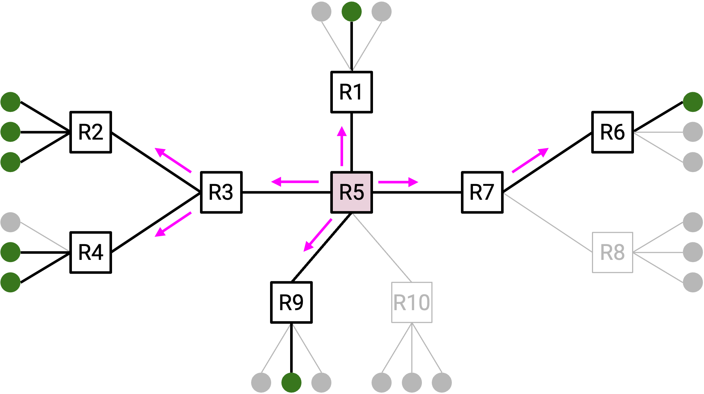
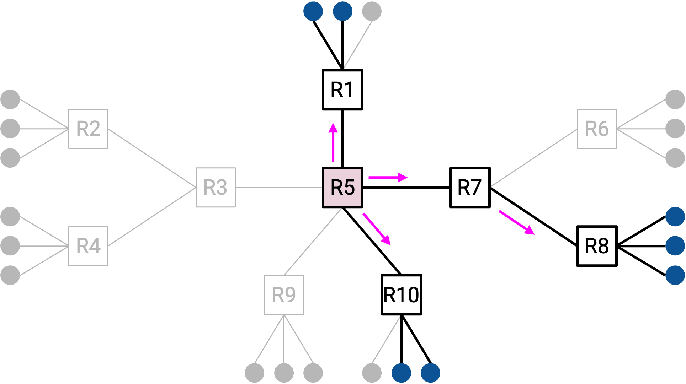
Here’s some fine print about the core, though it’s not the main intuition behind the protocol.
- Since the core is a router, it has a unicast IP address, and everyone can send unicast packets to the core.
- We’re building one tree per group. Different groups can use different cores.
- We’ll assume that everyone knows the mapping from groups to cores, e.g. “Group G1 is using R2 as its core.” This mapping could be published using something like DNS (recall: DNS is useful for distributing key-value pairs).
- The core isn’t a group member. In our model, we’ve assumed that hosts can join/leave groups, not routers. The core is a router, so it isn’t joining multicast groups.
Here’s some fine print about the join and quit messages, though it’s not the main intuition behind the protocol.
- The join and quit messages are technically sent by the first-hop router. The router uses IGMP to detect that one of its directly-connected hosts has joined or left the group, and the first-hop router sends out the join or quit message.
- In reality, a JOIN-ACK is sent in response to join messages, and routers note their parent and children when the JOIN-ACK is sent. Likewise, a QUIT-ACK message is sent in response to quit messages. For this class, we’ll ignore this feature.
Using CBTs
Now that we’ve built a CBT for a group, how do we use them to send messages to that group?
Case 1: If you are a group member, that means you’re already touching the tree. Therefore, all you need to do is broadcast the message to everybody on the tree.
More specifically, you start by forwarding the packet to your parent on the tree. Then, every router on the tree receives the packet and floods the packet to all of its tree links (both parent links and child links).
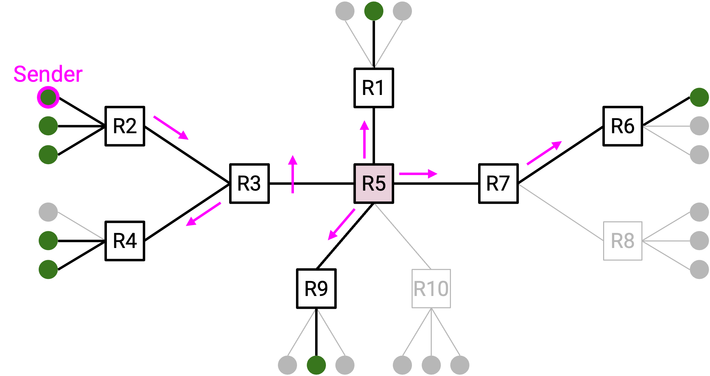
Case 2: If you’re not a group member, you aren’t touching the tree, so the Case 1 strategy won’t work. Instead, you can unicast the packet to the core. Then, the core can broadcast the message to everybody on the tree.
More specifically, when you unicast the packet to the core, you need to encapsulate the packet. The outer header has unicast information to reach the core. The inner header has the multicast information.
When the core receives the packet, it unwraps the outer header and sees the inner multicast packet. The core is then able to broadcast this packet along the tree. As in Case 1, every router on the tree receives the packet and floods the packet to all of its tree links (both parent and child links).
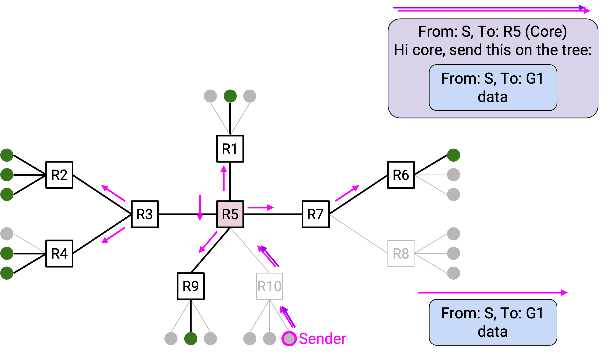
Benefit: Better Scaling
Recall that DVMRP scales poorly because the routers must keep track of one tree per source, per destination group. Each tree shows the shortest paths from one source, to all members of one destination group.
In the CBT approach, a CBT for a destination group is a simply a tree that touches every member of that group.
Notice that the CBT is the same for all sources. Unlike DVMRP (one tree per source, per destination group), we now only have one tree per destination group.
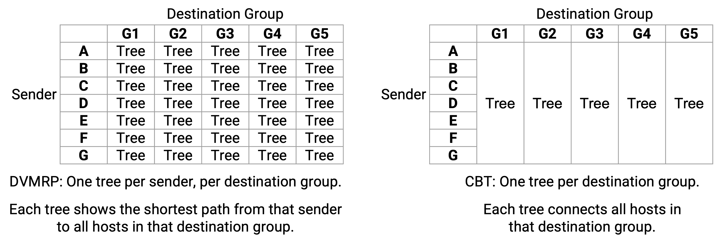
It’s useful to compare DVMRP trees and CBT trees to see how the protocols scale, but beyond that, the trees we build in each protocol have totally different semantics. If you’re confused, it might be easier to think of the trees as completely separate conceptual topics.
Recall that another scaling problem with DVMRP is the fact that pruning states are periodically cleared, and when that happens, packets get broadcast to everybody on the network (including non-group members). CBT also solves this problem, because there’s no point in CBT operation where a packet needs to get broadcast to everybody. The tree itself tells us where the group members are, and therefore ensures that non-group members will never receive the packet.
Efficiency Analysis
Recall that DVMRP built least-cost trees from the sender to all the group members. By forwarding packets along these trees, we ensured that packets would be forwarded along the least-cost paths to all group members.
By contrast, CBT trees don’t involve the sender at all, so there is no more guarantee of optimality. The paths from the sender to all group members are not necessarily the least-cost paths.
CBT trades scalability for efficiency. CBT is more scalable because fewer trees need to be built (i.e. routers store less state), but in exchange, packets may be forwarded along suboptimal paths.
The efficiency of CBT is highly dependent on which router is chosen to be the core. For example, consider the topology below, with various choices of core.
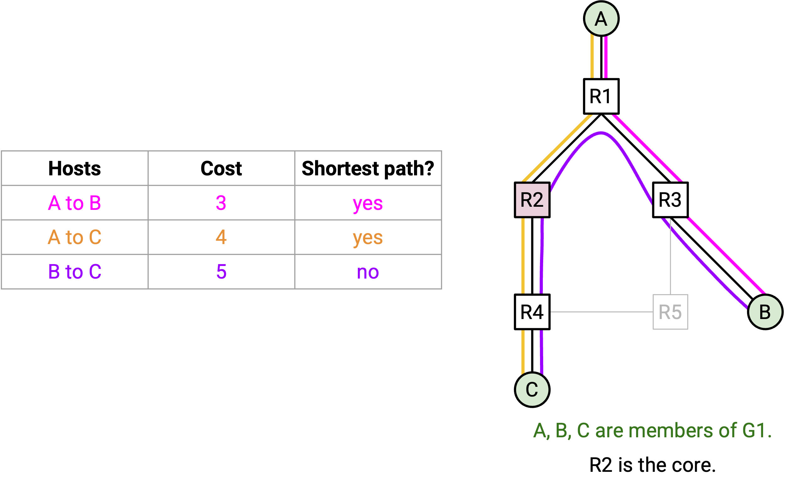
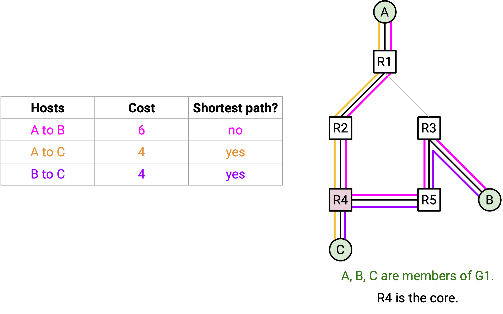
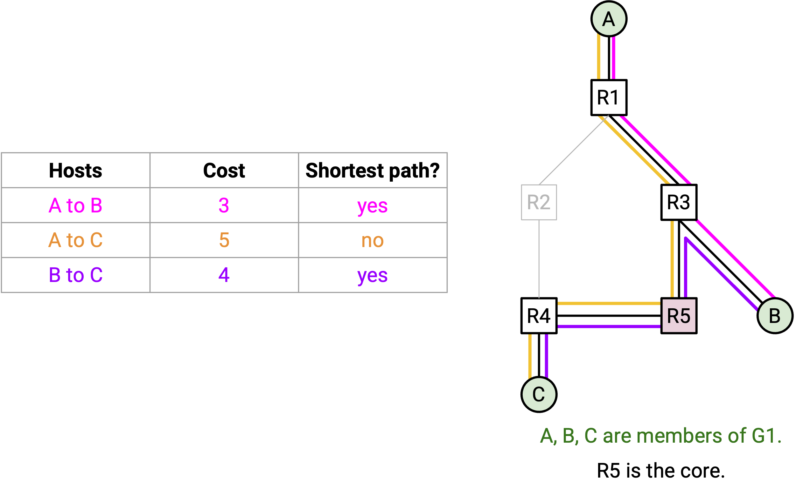
In every choice of core, at least one pair of routers are connected by a suboptimal path. We no longer have a guaranteed shortest paths tree from one source to all group members.
For example, if A plans on sending a lot of packets to the group, R2 might be a good choice of core, since it just happens to connect A to B and C along the shortest paths. However, if B wanted to send packets to the group, the packets would travel along a suboptimal path to C.
Finding the optimal core is infeasible, especially since members can join and leave the group at any time. In practice, operators often manually select the core.
Other CBT Pros and Cons
CBT creates a single point of failure at the root. To introduce fault-tolerance, we would need the tree to have multiple cores. This can be done, though it introduces more complexity. We won’t discuss multi-core trees any further, but see the linked paper below if you’re curious.
Recall that DVMRP was built as an extension to distance-vector, which results in the multicast protocol (DVMRP) and the unicast protocol (distance-vector) being tightly-coupled. Changing one protocol requires also updating the other protocol. By contrast, CBT is decoupled from the unicast routing protocol. CBT does use the unicast forwarding tables (e.g. to forward join messages to the root), but it doesn’t matter how those forwarding tables were generated (distance-vector, link-state, hard-coded, etc.). As a result, CBT does not rely on any particular unicast protocol being used, and CBT works with any unicast protocol.
Further reading on CBT: https://people.eecs.berkeley.edu/~sylvia/cs268-2019/papers/cbt.pdf
Is DVMRP or CBT better? As we’ve seen, there are trade-offs between the two protocols.
If you have one source sending data to a large group, then DVMRP might be the better solution, since it will ensure that all this data travels along optimal paths through the network. Lots of data is being sent (to lots of group members), so using optimal paths results in significant bandwidth savings. Also, if the group is large (e.g. includes almost everyone on the network), then DVMRP’s occasional flooding may not be a big problem.
By contrast, if you have a small group whose members are scattered across a large network, then CBT might be the better solution. CBT will avoid flooding packets to non-members, which would waste a lot of bandwidth (since most members are not in the group).
In practice, both DVMRP and CBT are used today. DVMRP is sometimes named PIM-DM (Protocol Independent Multicast - Dense Mode), which reflects the fact that DVMRP is good for large groups. CBT is sometimes called PIM-SM (Protocol Independent Multicast - Sparse Mode), which reflects the fact that CBT is good for smaller groups.